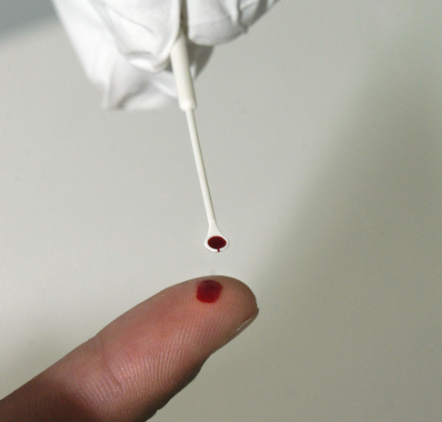

Aula 1
Assistência ao Parto: as práticas baseadas em evidência
científica e a realidade brasileira. (parte 1)
Introdução
A evolução das espécies impôs modificações ao esqueleto humano, e, por meio do bipedalismo e da encefalização, determinaram:
- Conhecer os aspectos históricos e epidemiológicos relacionados ao HTLV.
- Compreender as formas de transmissão do HTLV.
- Entender as características virais e como se relacionam com a replicação e propagação do vírus.
- Conhecer as formas de prevenção da transmissão do HTLV.
Essas modificações anatômicas trouxeram dificuldades para o nascimento e o surgimento dos tempos acessórios no mecanismo de parto dos humanos (flexão, rotação interna e rotação externa).
Mulher no momento do parto
Ao contrário dos primatas, para os quais o processo de insinuação não exige o tempo acessório da flexão e ocorre em variedades de posição diretas (habitualmente em occipitossacra), nos fetos humanos a termo a insinuação ocorre comumente pelos diâmetros oblíquos e transversos do estreito superior.
Por isso, o trajeto mais angustiado da pelve humana faz com que o polo cefálico fetal necessite da flexão como um movimento acessório à insinuação, que, por sua vez, ocorre frequentemente em variedades de posição oblíquas e transversas, tornando necessária a rotação interna como um movimento acessório ao processo subsequente de descida pelo trajeto pélvico. Após alcançar o estreito inferior e defletir por baixo da sínfise púbica, o polo cefálico, posicionado externamente ao corpo materno, restitui por meio de nova rotação (externa), permitindo a insinuação, descida e desprendimento dos ombros. Expulsos os diâmetros biparietal e biacromial, o desprendimento do feto é completado com a saída do seu diâmetro bitrocantérico. Veja esse passo a passo ilustrado na imagem a seguir.
Mecanismo do parto em OEA em 45º
Além das modificações evolucionárias ocorridas no trajeto pélvico, as mudanças no estilo de vida também trouxeram dificuldades no momento do parto. Veja a seguir como o modo de viver das pessoas mudou ao longo do tempo, e os impactos que surgiram nos partos humanos.
Marcada pelo modo de vida nômade, atividades caçadoras e coletoras, e pouca miscigenação, o parto obstruído era um fenômeno raro.
A evolução até a atualidade (10 mil anos) foi marcada pelo desenvolvimento da agricultura, aumento das densidades populacionais, maior miscigenação racial e aumento da ocorrência do sedentarismo. Além disso, a globalização da dieta hipercalórica norte-americana vem contribuindo para a progressão da obesidade no mundo, aumentando as taxas de distocia e a incidência de cesarianas.
De acordo com o Ministério da Saúde (MS), em 2019 a prevalência de sobrepeso entre as mulheres brasileiras já alcançava 53,9%, enquanto a de obesidade já era de 20,7%.
A projeção da Organização Mundial de Saúde (OMS) para o ano de 2025 é de que aproximadamente 2,3 bilhões de adultos estarão com sobrepeso e 700 milhões de pessoas com obesidade viverão no mundo.
Clique aqui e saiba mais sobre como essas mudanças impactam nas populações que vivem em situação de isolamento.
Obesidade e obstetrícia
Estudos investigaram a associação entre peso corporal e complicações relacionadas a hipocontratilidade uterina, e revelaram que a obesidade prejudica a habilidade contrátil do útero no trabalho de parto. Adicionalmente, o estudo da habilidade contrátil do miométrio, realizado por meio da avaliação da força e frequência contrátil, e do fluxo intracelular de Ca2+, também mostrou comprometimento da contratilidade uterina em gestantes com índice de massa corporal elevado.
Outras pesquisas que investigam a relação entre obesidade e resultados maternos e neonatais revelam maior incidência de eventos adversos em gestantes obesas. Veja a seguir as principais preocupações com mulheres obesas durante a gestação, no parto e no pós-parto.

Obstetrícia no Brasil
Como você viu até aqui, com o passar do tempo as questões obstétricas mudaram devido à transformação do estilo de vida das pessoas e com o avanço de pesquisas e da medicina. Veja algumas informações sobre a obstetrícia em nosso país ao longo dos anos.
Evolução da Assistência Obstétrica
Marcos históricos na redução da mortalidade materna
XX
Na segunda metade do século XX, a assistência obstétrica passou a ser marcada por uma intensa medicalização. Em vários países, e em particular no Brasil, ficou notório o uso mais seguro, porém mal regulado, da cesariana nos serviços públicos, e sua realização não regulada no setor privado. Essa mudança evoluiu de forma drástica, transpassando a virada do século.
O Inquérito Nacional Nascer no Brasil, em sua primeira etapa, revelou taxas de cesariana superiores a 30% no setor público, e no setor privado atingiu percentuais superiores a 70%. Em consequência da marcante elevação das taxas de cesarianas no Brasil e no mundo, tão bem documentadas na virada do século, da modificação dos fatores de risco maternos, e da evolução na assistência obstétrica, a meta previamente estabelecida pela OMS de percentuais de cesárea entre 10 e 15% passaram a ter sua justificativa questionada.
Uma compilação de taxas de cesárea, indicadores socioeconômicos e resultados de saúde, publicada em 2014, respondeu bem a esses questionamentos. Essa investigação foi realizada em 19 países durante três décadas e utilizou como indicadores o índice de desenvolvimento humano (IDH), o produto interno bruto (PIB) e as taxas de mortalidades materna, neonatal e infantil. O estudo revelou que, após alcance de 10% ajustado pelo PIB e pelo IDH, elevações nesse percentual de 10% não produziram impacto em nenhuma das três taxas de mortalidade, concluindo que taxas superiores a 10-15% são dificilmente justificadas na perspectiva médica.
Mortalidade materna no mundo e no Brasil
A evolução do cenário da mortalidade materna (MM) revelou, em 2018, uma razão de mortalidade materna (RMM) no Brasil de 59,1 óbitos para cada 100.000 nascidos vivos, número bem acima das metas firmadas com a Organização das Nações Unidas (ONU). Portanto, a Meta 5 do Milênio, de redução a 75% na mortalidade materna e neonatal entre os anos 1990 e 2015, visando atingir 30 a 35 mortes por 100.000 nascidos vivos, não foi atingida, sendo atualmente prorrogada para 2030.
Entre 1996 e 2018 foram registrados 38.919 óbitos maternos no Sistema de Informação de Mortalidade do DATASUS (SIM-DATASUS), sendo a maioria por causas obstétricas diretas, ou seja, por complicações obstétricas que ocorrem durante a gravidez, parto ou puerpério devido a intervenções, omissões, tratamento incorreto ou a uma cadeia de eventos resultantes de qualquer uma dessas causas. As principais causas obstétricas diretas de MM vêm se mantendo ao longo dos anos no Brasil, divergindo apenas na ordem de suas incidências em relação ao mundo.
Em nível global, o principal grupo de causa de MM é hemorragia, seguida por hipertensão e depois por infecção. No Brasil, a hipertensão ainda permanece como principal causa, seguida por hemorragia e infecção.
Principais causas obstétricas diretas de MM entre 1996 e 2018

Já as causas obstétricas indiretas são aquelas que resultam de doenças preexistentes à gestação ou que se desenvolveram durante esse período, não provocadas por causas obstétricas diretas, mas agravadas pelos efeitos fisiológicos da gravidez. Elas ocorrem em menor incidência em relação às causas diretas.
Principais causas obstétricas indiretas de MM entre 1996 e 2018
Principais causas obstétricas indiretas de MM entre 1996 e 2018

Evolução da Assistência Obstétrica
Marcos históricos na redução da mortalidade materna
A RMM no Brasil foi superior à de outros países da América, a exemplo de Cuba, Argentina, Uruguai e Chile.
As estimativas da OMS apontaram o Brasil para a faixa de 20 a 99 por 100.000 nascidos vivos (NV) — a despeito da razão em 2020 realmente ter apresentado registro nessa faixa (RMM Brasil 2020 = 74,7/100.000 NV).
A pandemia de Covid-19 impactou marcantemente os números nesse ano, com a RMM atingindo 117,4 mortes maternas / 100.000 NV.
O ápice da RMM da pandemia registrado em 2021 foi seguido de queda para 54,5 óbitos/100.000 NV em 2022.
Nesse ano, a RMM registrou uma nova queda para 49,64 óbitos/100.000 NV em 2023 (dados preliminares).
Entre 2010 e 2023 a MM predominou em mulheres na faixa etária de 30 a 34 anos, raça/cor parda, escolaridade entre 8 e 11 anos completos de estudo e solteiras. Nesse período, os grupos de causa de MM mantiveram a ordem de suas incidências, com hipertensão seguida por hemorragia e infecção, e com maior declínio observado na curva de MM por hipertensão após o ápice de 2021.
Em 2015 a ONU lançou os 17 objetivos de desenvolvimento sustentável (ODS 2030) para uma agenda de ações até 2030. A redução da MM integra o Objetivo 3 - Saúde e Bem-estar, que tem como diretriz a garantia do acesso à saúde de qualidade e a promoção do bem-estar para todos, em todas as idades. A meta estabelecida, que deverá ser atingida até 2030 em nível mundial, é a redução da RMM para menos de 70 mortes /100.000 NV. A meta estabelecida para o Brasil, e acordada em 28/05/2018 pelo MS, foi de 30 mortes/100.000 NV.
Podemos afirmar que a evolução da RMM entre 1990 e 2015 foi de queda, porém inferior ao objetivo anteriormente estabelecido pela ONU, de redução de 75% nas mortalidades materna e neonatal, com meta para MM de 30 a 35 óbitos/100.000 NV. Essa melhora abaixo dos números desejados foi seguida por estabilização, que se manteve até a pandemia de Covid-19. Uma vez que a meta definida pela ODS 2030 impõe o desafio de conseguir uma redução média anual de 3,5% na MM a partir de 2015, ficam evidentes os desafios que atualmente temos para conseguir atingir a meta de menos de 30 óbitos maternos/100.000 em 2030.
Atualidade da assistência obstétrica no Brasil
Atualmente, a assistência obstétrica no Brasil é caracterizada pelo convívio com o pior dos dois “mundos”, uma vez que adoecimento e morte ocorrem tanto por falta quanto por excesso de tecnologia apropriada.
Vivenciamos um paradoxo perinatal e o modelo dos três atrasos, caracterizado por fatores culturais e socioeconômicos dos pacientes (influenciando as decisões por procura pela assistência médica), pela acessibilidade aos serviços de saúde (identificação e acesso) e ainda pelo cuidado assistencial pautado na qualidade das ações oferecidas por meio de tratamentos adequados e apropriados, é bastante aplicável ao se considerar as especificidades da assistência obstétrica brasileira na atualidade.
No país, os números de mortalidade infantil e materna seguem elevados e caracterizados por causas que podem ser evitadas por meio de ações de saúde. De acordo com Diniz (2009), a asfixia intraparto por deficiência na monitorização intraparto se faz presente, com 25% dos óbitos infantis ocorrendo no primeiro dia de vida. A intensa medicalização do nascimento é exemplificada pelo percentual de 98% dos partos ocorrendo em ambiente hospitalar, por 88% de assistência prestada por médicos e por taxas de cesariana próximas de 60%.
Os avanços tecnológicos vêm sendo assimilados, mas alguns profissionais seguem adotando práticas sem respaldo científico. Entre os aspectos comprometedores da qualidade da assistência atualmente oferecida destacam-se:
- Banalização das cesarianas.
- Falta de institucionalização do parto.
- Não adoção de protocolos assistenciais baseados em evidências científicas (“depende do plantão”).
- Falta de privacidade nas maternidades e dificuldade de acesso à analgesia do parto.
- Ocorrência persistente de partos com intervenções desnecessárias e comprometedoras de sua fisiologia.
- Desrespeito aos direitos das mulheres e das crianças. Judicialização da saúde
- Mercantilização das práticas médicas, com destaque contemporâneo para a mercantilização da assistência humanizada ao nascimento.
O dilema da Obstetrícia no século XXI e a cesariana a pedido
A evolução para um modelo de assistência obstétrica paradoxal e a progressiva judicialização das práticas médicas vinculadas à assistência ao parto resultaram em um dilema, que define com precisão o momento obstétrico no século XXI: o parto normal planejado versus a cesariana a pedido.
Gestante em consulta
Com prevalência de 2,5% nos Estados Unidos da América, as cesarianas a pedido vêm progressivamente sendo adotadas em todo o mundo, e em particular no território brasileiro. Além do medo do parto vaginal, as principais razões para cesarianas a pedido incluem os seguintes desejos:
- Evitar dor e trauma perineal vinculados ao parto vaginal.
- Planejar o parto e evitar cesárea não planejada.
- Evitar morbidades como incontinências e prolapsos dos órgãos pélvicos.
- Evitar resultados neonatais adversos raros (decessos fetais intrauterino e intraparto, encefalopatia hipóxico-isquêmica, traumas e infecções neonatais).
Possíveis objeções à cesariana a pedido incluem:
- Potencial aumento de morbimortalidade materna (complicações anestésicas, infecções, lesão corporal, dor, atraso no retorno à atividade sexual).
- Morbidade neonatal de curto prazo (principalmente respiratória).
- Prematuridade iatrogênica.
- Efeitos deletérios na amamentação (iniciação e duração diminuídas).
- Os riscos impostos às gestações subsequentes (acretismo placentário, cesárea de repetição difícil) e intenção de minimizar o uso dos recursos (tempo de permanência hospitalar, custos financeiros).
A Federação Internacional de Ginecologia e Obstetrícia (FIGO) considera a cesariana um procedimento cirúrgico associado a riscos potenciais para mãe e recém-nato, e de maior custo. Portanto, afirma que sua realização sem indicação médica não é eticamente justificável, pois fere o princípio da beneficência e não maleficência. No Brasil, a má qualidade da assistência obstétrica, com elevada taxa de asfixia neonatal intraparto, favorece a tocofobia materna e a normalização da cesariana a pedido. Veja agora algumas questões importantes sobre a realização do parto via cesárea:
Iniciativas para qualificação da assistência obstétrica no Brasil e no mundo
Diante do cenário epidemiológico e da nova meta acordada de redução da MM, iniciativas visando a qualificação da assistência obstétrica no país vêm sendo implementadas, envolvendo diversas entidades. Conheça algumas delas:
Essa iniciativa vem sendo desenvolvida desde 2015 pela Agência Nacional de Saúde Suplementar (ANS). Conta com o apoio do Ministério da Saúde, Institute for Healthcare Improvement, Hospital Albert Einstein, Associação Brasileira de Obstetrizes e Enfermeiros Obstetras (ABENFO) e Federação Brasileira das Associações de Ginecologia e Obstetrícia (Febrasgo).
O projeto pretende melhorar a atenção ao parto e nascimento, valorizando o parto normal, a redução de cesáreas desnecessárias, a melhoria da segurança do paciente e a experiência do cuidado para as mães e seus filhos. Por meio de uma política de indução regulatória, a iniciativa visa o desenvolvimento e a aplicação de boas práticas e a melhoria da qualidade da atenção na Linha de Cuidados Materno e Neonatal oferecida pelas operadoras. Tal política propicia a adoção de boas práticas (baseadas em evidências científicas), de modo a estimular maior resolutividade da atenção ao pré-natal, parto e puerpério, melhorando a segurança de mães e recém-natos a fim de garantir uma melhor experiência à mulher durante o ciclo grávido-puerperal.
Iniciativa criada para atuar em prol da redução da mortalidade materna e neonatal e da garantia de direitos básicos para o parto e nascimento seguros em nosso país. A aliança foi criada em resposta ao chamado da OMS, que escolheu o “Cuidado materno e neonatal seguro” como tema do Dia Mundial da Segurança do Paciente em 2021. Uma das entidades que faz parte dessa aliança é o Portal de Boas Práticas em Saúde da Mulher, da Criança e do Adolescente do Instituto Fernandes Figueira/Fundação Oswaldo Cruz (IFF/FIOCRUZ). As principais diretrizes da Aliança Nacional são Equidade, Respeito, Redes de Atenção e Parto Adequado.
É um sistema utilizado para monitorar e comparar as taxas de cesárea ao nível das instalações de forma padronizada, confiável, consistente e orientada para a ação. Destina-se a todas as mulheres com partos assistidos em um ambiente específico (por exemplo, uma maternidade ou uma região) e não apenas às mulheres submetidas a cesarianas. É uma classificação perinatal completa, simples, robusta, reprodutível, clinicamente relevante e prospectiva, que permite a comparação e a análise das taxas de cesáreas dentro e entre os grupos de mulheres.
O sistema classifica todas as mulheres admitidas para assistência ao parto em um dos 10 grupos que são mutuamente exclusivos e totalmente inclusivos. Isso significa que, com base em algumas variáveis obstétricas básicas, toda mulher admitida para parto em qualquer unidade de saúde pode ser classificada em um, e apenas um dos 10 grupos, e que nenhuma mulher ficará de fora da classificação.
Clique aqui e saiba mais sobre o uso da Classificação Robson.
Fim da aula
Nesta aula você revisou as modificações evolucionárias que impuseram dificuldades para o nascimento e surgimento dos tempos acessórios no mecanismo de parto dos humanos. Além disso, você também viu:
- O impacto atual da obesidade na contratilidade uterina e sua relação com eventos adversos na gravidez e no parto.
- A evolução da assistência obstétrica do Brasil, destacando a progressão da medicalização e a banalização da cesariana e suas consequências mórbidas.
- Análises sobre a evolução da mortalidade materna e da morbidade materna grave no mundo e no Brasil.
- Os aspectos atuais da assistência obstétrica.
- O dilema vinculado à cesariana a pedido.
- As principais iniciativas para qualificação da assistência obstétrica vigentes no nosso país e no mundo.
Você concluiu esta aula, continue se empenhando nos seus estudos. Siga para a próxima aula!